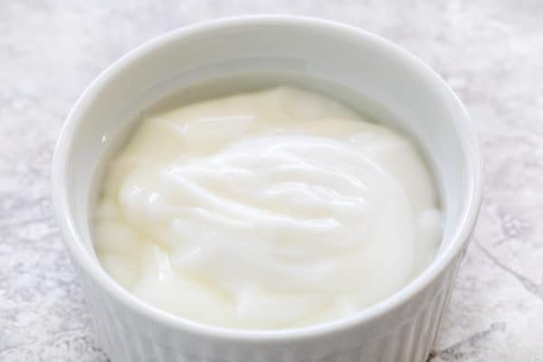
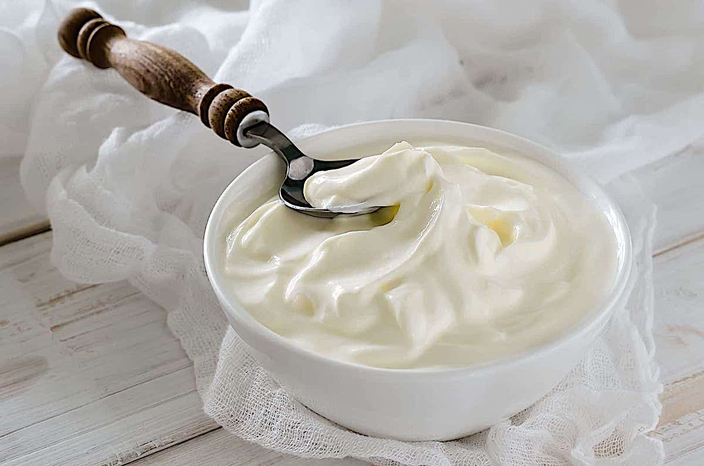
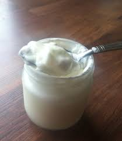
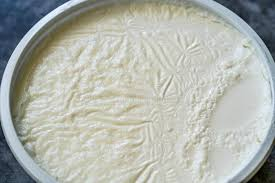

Unstrained, traditional cow’s milk yogurt
This is your everyday, run of the mill yogurt. Much like milk itself, you can buy whole milk yogurt, low-fat, or nonfat. It is a medium to a thinner texture that can be sour when it’s plain. Many commercial brands add sugar, fruits, and natural flavors to balance this.
Nutritional profile: Per 1 cup
- 8.5g protein
- 8g fat
- 11g carbohydrates
- 11g sugar
- 113mg sodium
- 296mg calcium
- 233mg phosphorus
Greek Yogurt
Greek yogurt is strained after it’s fermented. This gets rid of the whey liquid and results in a thicker texture, and it can also taste sourer than traditional yogurt (unless flavors and sugars are added). Before purchasing, check the label and make sure that milk and live cultures (good for your gut health) are the main ingredients.
Nutritional profile: Per 1 cup (nonfat)
- 25g protein
- 1g fat
- 10g carbohydrates
- 8g sugar
- 90mg sodium
- 245mg calcium
- 333mg phosphorus
Goat's milk yogurt
If you like goat cheese, you might also be a fan of goat yogurt. It has a similar earthy quality that’s a bit sweet. The texture is rich and creamy but not quite as thick as Greek yogurt. It has a similar nutritional value to traditional yogurt with less lactose, making it a tolerable alternative to those who are sensitive to dairy.
Nutritional profile: Per 1 cup
- 9g protein
- 10g fat
- 11g carbohydrates
- 11g sugar
- 122mg sodium
- 327mg calcium
- 271mg phosphorus
Sheep's milk yogurt
Made from sheep’s milk, sheep yogurt has an earthy and natural flavor. Compared to traditional cow’s milk, it’s thicker and creamier, like Greek yogurt. But it has less lactose, so it also makes a great alternative to dairy yogurt
Nutritional profile: Per 100g
- 5g protein
- 4g fat
- 5g carbohydrates
- 4g sugar
- 47mg sodium
- 176mg calcium
- 0g fiber